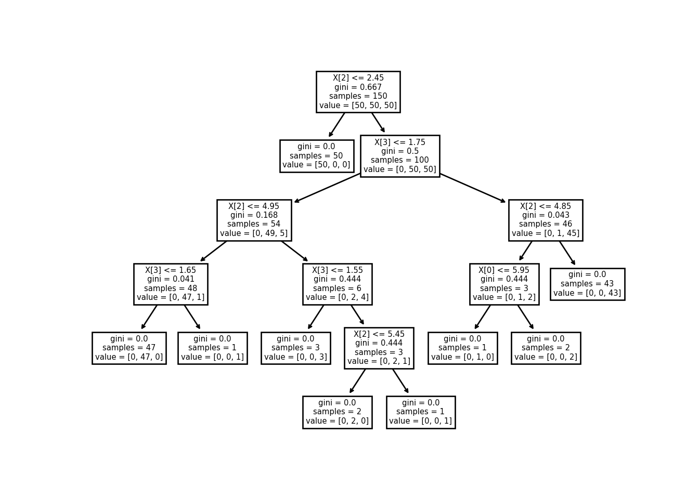
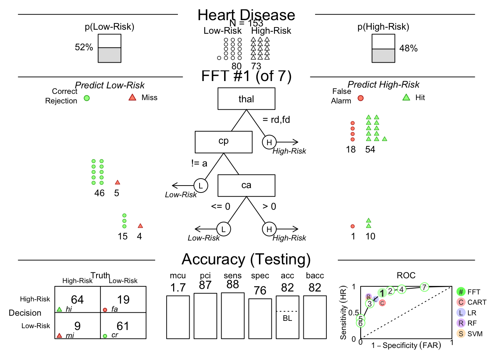
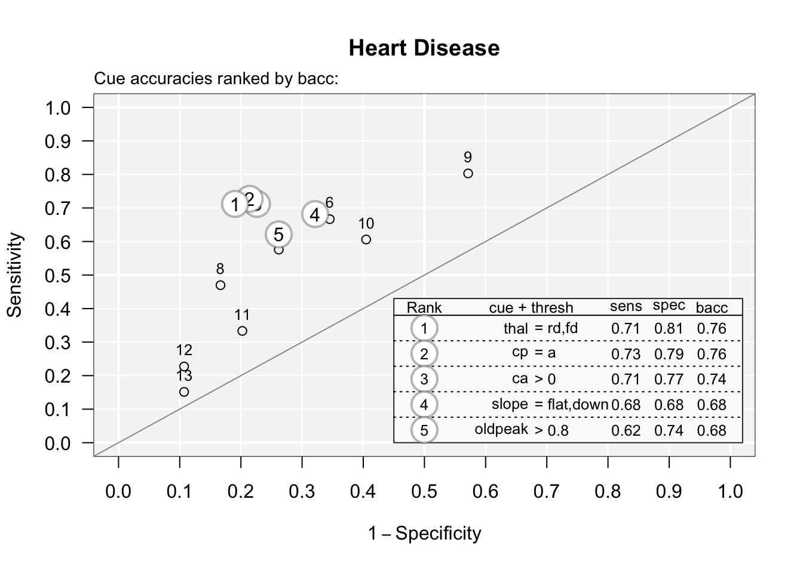

Chapter 4 Supervised Learning
4.1 Introduction to Decision Trees
4.1.1 What are Decision Trees?
Decision trees are non-parametric supervised learning algorithms, that are used to predict the class or value of a specific target variable. Predictions are based on n simple decision rules which are inferred from the set of data, which was used to train the respective algorithm (Chauhan, 2022).
Hastie et al. (2009) differentiate between to classes of decision trees: Regression trees and classification trees. The former is a class of decision tree algorithms, that are used when the target variable is continuous; accordingly algorithms of the latter class are used, when the target variable is categorical. To simplify matters this chapter shall focus on classification trees.
In contrast to other decision algorithms decision trees are non-compensatory. Decision algorithms, such as random forests and regression, which are typically compensatory algorithms, are designed to use most, if not all, of the available cue information. The design of such algorithms is based on the premise, that the value of one cue (a.k.a. feature or predictor) could overturn the evidence given by another or several other cues. Non-compensatory algorithms on the hand, such as decision trees, use only a partial subset of the given cue information to reach a decision. This design is based on the premise, that the value or values of one or several cues cannot be outweighed by the values of any other cues. In short this means that decision trees deliberately ignore information. This design can actually offer significant practical and statistical advantages (Phillips et al., 2017).
4.1.2 Basic Concepts of Decision Trees
Classification trees are used to solve binary classification tasks. The goal of tasks of this class is the prediction of a binary criterion value (e.g. having heart disease vs. not having heart disease) for each of a set of individual cases (e.g. patients) based on each case’s values on a not necessarily specified range of cues (e.g. thallium scintigraphy results, chest pain type etc.) (Phillips et al., 2017).
These kinds of decision trees (as well as decision trees in general) can be applied as an ordered set of n simple conditional rules (A ⟹ B). These rules are applied sequentially (Phillips et al., 2017).
4.1.3 A Short History of Decision Trees
One of the first decision tree algorithms was actually invented to model human learning in psychology (Hunt et al., 1966). This algorithm forms the foundation for many popular decision tree algorithms such as the ID3 algorithm (Quinlan, 1986), the C4.5 algorithm (Quinlan, 2003) and the famous CART (Classification And Regression Trees) algorithm (Breiman, 1984).
For further information I recommend reading the short but very informative article “Decision Trees” by de Ville (2013).
4.1.4 Basic Terminology of Decision Trees
Before we dive in deeper in the inner workings of decision trees I would like to give a short overview of the basic terminology used in the context of decision trees.
Formally a decision tree is comprised of the following elements (Chauhan, 2022; Phillips et al., 2017; “What Is a Decision Tree,” n.d.):
The Root Node …
is the top node of a decision tree.
has no incoming branches.
represents the entire population or sample.
A Decision Node …
is a sub-node (i.e. not a root node), that splits into further sub-nodes.
represents cue-based questions.
represents a subset of the data.
Branches …
- represent answers to cue-based questions.
Parent nodes …
- are nodes, that split into sub-nodes.
Child nodes …
- are the sub-nodes of parent nodes.
Leaf or terminal nodes …
do not split into further sub-nodes.
represent decisions.
A Sub-tree …
- is a sub-section of the entire tree.
4.1.5 An Example of Creating a Decision Tree with Python
Below you see an example of a decision tree, which I created using a free software machine learning library for the Python programming language called scikit-learn.
The algorithm used for the creation of the following decision tree is based on the CART algorithm (Breiman, 1984).
#|label: dt-python
#| tidy: true
#| tidy-opts:
#| - width.cutoff=60
iris = load_iris()
X, y = iris.data, iris.target
clf = tree.DecisionTreeClassifier()
clf = clf.fit(X, y)
tree.plot_tree(clf)
Unfortunately “the scikit-learn implementation does not support categorical variables for now” (“Decision Trees,” n.d.). Luckily the are R packages that allow the construction of decision trees based on categorical data. An example would be the rpart package.
4.1.6 An Example of Creating a Decision Tree with R
Below you see an example of a decision tree, which I created using the rpart package.
The algorithm used for the creation of the following decision tree is based on the CART algorithm (Breiman, 1984).
4.1.6.1 Preprocessing of Data
set.seed(678)
path <- 'https://raw.githubusercontent.com/guru99-edu/R-Programming/master/titanic_data.csv'
titanic <-read.csv(path)
shuffle_index <- sample(1:nrow(titanic))
titanic <- titanic[shuffle_index, ]
preclean_titanic <- titanic
preclean_titanic$age <- as.integer(preclean_titanic$age)## Warning: NAs durch Umwandlung erzeugtpreclean_titanic$fare <- as.integer(preclean_titanic$fare)## Warning: NAs durch Umwandlung erzeugtclean_titanic <- preclean_titanic %>%
select(-c(home.dest, cabin, name, x, ticket)) %>% # Drop variables
mutate(pclass = factor(pclass, levels = c(1, 2, 3), #Convert to factor level
labels = c('Upper', 'Middle', 'Lower')),
survived = factor(survived, levels = c(0, 1), #Convert to factor level
labels = c('No', 'Yes')),
sex = factor(sex),
embarked = factor(embarked)) %>%
na.omit()4.1.6.2 Creating a Train and Test Dataset
create_train_test <- function(data, size = 0.8, train = TRUE) {
n_row = nrow(data)
total_row = size * n_row
train_sample <- 1:total_row
if (train == TRUE) {
return(data[train_sample, ])
} else {
return(data[-train_sample, ])
}
}
data_train <- create_train_test(clean_titanic, 0.8, train = TRUE) # Train dataset with 80% of original data
data_test <- create_train_test(clean_titanic, 0.8, train = FALSE) # test dataset with 20% of original data4.1.7 Advantages and Disadvantages of Decision Trees
One of the big advantages of decision trees is, that they are incredibly simple to understand, to interpret and to visualize. Furthermore they are generally able to handle both numerical and categorical data. Another advantage is, that they can not only solve classification tasks, but regression tasks as well. Besides that they can even handle multi-output problems (problems where several outputs need to be predicted).
Unfortunately, like any other algorithms or statistical methods, decision tree algorithms do have several disadvantages as well. The main and most important disadvantage of decision trees though is the problem of overfitting. As I have explained before decision tree algorithms are non-compensatory algorithms, i.e. they ignore data (see above). This does not mean though, that they are always simple. Quite the opposite in fact. Without the appropriate necessary restrictions decision trees can become highly complex networks of questions containing dozens or - depending on the respective dataset - even hundreds of dozens of nodes. Although such complex decision trees usually describe the data, which they were trained with, very well, they tend to be exceptionally bad at predicting data.
Fortunately the problem of overfitting can be overcome by carefully pruning - i.e. trimming off certain branches of the decision tree - without decreasing the overall accuracy of the decision tree algorithm. One algorithm used to achieve this is the minimal cost-complexity pruning algorithm.
For further information on the advantages and disadvantages of decision trees please read the respective article on the scikit-learn website (“Decision Trees,” n.d.).
4.1.8 Fast-and-Frugal Trees
Another solution for the problem of overfitting is the usage of more restrictive forms of decision tree algorithms. One of the most restrictive forms of a decision tree is a fast-and-frugal tree (Phillips et al., 2017).
Based on the research by Gigerenzer and colleagues on the topic of heuristics Phillips, Neth (University of Constance), Woike and Gaissmaier (University of Constance) (2017) build the R package FFTrees, that allows users to easily create, visualize, and evaluate fast-and-frugal trees. Furthermore the package introduces a very handy new class of algorithms for constructing fast-and-frugal trees.
4.1.9 Creating a FFT with FFTrees
# Step 1: Create FFTs from training data and test on testing data heart.
heart.fft <- FFTrees(formula = diagnosis ~ ., # Criterion
data = heart.train, # Training data
data.test = heart.test, # Testing data
main = "Heart Disease", # Optional labels
decision.labels = c("Low-Risk", "High-Risk"))# Step 1: Create FFTs from training data and test on testing data heart.
heart.fft <- FFTrees(formula = diagnosis ~ ., # Criterion
data = heart.train, # Training data
data.test = heart.test, # Testing data
main = "Heart Disease", # Optional labels
decision.labels = c("Low-Risk", "High-Risk"))## Setting 'goal = bacc'## Setting 'goal.chase = bacc'## Setting 'goal.threshold = bacc'## Setting cost.outcomes = list(hi = 0, mi = 1, fa = 1, cr = 0)## Growing FFTs with ifan:##
[========================================>------------------------------------] 54%
[==============================================>------------------------------] 62%
[====================================================>------------------------] 69%
[==========================================================>------------------] 77%
[================================================================>------------] 85%
[======================================================================>------] 92%
[=============================================================================] 100%
## Fitting other algorithms for comparison (disable with do.comp = FALSE) ...# Step 3: Inspect and summarize FFTs
heart.fft # Print statistics of the final FFT## Heart Disease
## FFTrees
## - Trees: 7 fast-and-frugal trees predicting diagnosis
## - Outcome costs: [hi = 0, mi = 1, fa = 1, cr = 0]
##
## FFT #1: Definition
## [1] If thal = {rd,fd}, decide High-Risk.
## [2] If cp != {a}, decide Low-Risk.
## [3] If ca > 0, decide High-Risk, otherwise, decide Low-Risk.
##
## FFT #1: Training Accuracy
## Training data: N = 150, Pos (+) = 66 (44%)
##
## | | True + | True - | Totals:
## |----------|--------|--------|
## | Decide + | hi 54 | fa 18 | 72
## | Decide - | mi 12 | cr 66 | 78
## |----------|--------|--------|
## Totals: 66 84 N = 150
##
## acc = 80.0% ppv = 75.0% npv = 84.6%
## bacc = 80.2% sens = 81.8% spec = 78.6%
##
## FFT #1: Training Speed, Frugality, and Cost
## mcu = 1.74, pci = 0.87, E(cost) = 0.200inwords(heart.fft) # Print a verbal description of the final FFT## [1] "If thal = {rd,fd}, decide High-Risk."
## [2] "If cp != {a}, decide Low-Risk."
## [3] "If ca > 0, decide High-Risk, otherwise, decide Low-Risk."summary(heart.fft) # Print statistics of all FFTs## Heart Disease
##
## FFTrees
## - Trees: 7 fast-and-frugal trees predicting diagnosis
## - Parameters: algorithm = 'ifan', goal = 'bacc', goal.chase = 'bacc',
## sens.w = 0.5, max.levels = 4
##
##
## Table: (\#tab:fft)Tree definitions
##
## | tree| nodes|classes |cues |directions |thresholds |exits |
## |----:|-----:|:-------|:----------------|:----------|:-------------------|:---------|
## | 1| 3|c;c;n |thal;cp;ca |=;=;> |rd,fd;a;0 |1;0;0.5 |
## | 2| 4|c;c;n;c |thal;cp;ca;slope |=;=;>;= |rd,fd;a;0;flat,down |1;0;1;0.5 |
## | 3| 3|c;c;n |thal;cp;ca |=;=;> |rd,fd;a;0 |0;1;0.5 |
## | 4| 4|c;c;n;c |thal;cp;ca;slope |=;=;>;= |rd,fd;a;0;flat,down |1;1;0;0.5 |
## | 5| 3|c;c;n |thal;cp;ca |=;=;> |rd,fd;a;0 |0;0;0.5 |
## | 6| 4|c;c;n;c |thal;cp;ca;slope |=;=;>;= |rd,fd;a;0;flat,down |0;0;0;0.5 |
## | 7| 4|c;c;n;c |thal;cp;ca;slope |=;=;>;= |rd,fd;a;0;flat,down |1;1;1;0.5 |
##
##
## Table: (\#tab:fft)Tree statistics on training data
##
## | tree| n| hi| fa| mi| cr| sens| spec| far| ppv| npv| acc| bacc| wacc| cost_decisions| cost_cues| cost| pci| mcu|
## |----:|---:|--:|--:|--:|--:|----:|----:|----:|----:|----:|----:|----:|----:|--------------:|---------:|----:|----:|----:|
## | 1| 150| 54| 18| 12| 66| 0.82| 0.79| 0.21| 0.75| 0.85| 0.80| 0.80| 0.80| 0.20| 0| 0.20| 0.87| 1.74|
## | 2| 150| 57| 22| 9| 62| 0.86| 0.74| 0.26| 0.72| 0.87| 0.79| 0.80| 0.80| 0.21| 0| 0.21| 0.86| 1.84|
## | 3| 150| 44| 7| 22| 77| 0.67| 0.92| 0.08| 0.86| 0.78| 0.81| 0.79| 0.79| 0.19| 0| 0.19| 0.88| 1.56|
## | 4| 150| 60| 31| 6| 53| 0.91| 0.63| 0.37| 0.66| 0.90| 0.75| 0.77| 0.77| 0.25| 0| 0.25| 0.84| 2.12|
## | 5| 150| 28| 2| 38| 82| 0.42| 0.98| 0.02| 0.93| 0.68| 0.73| 0.70| 0.70| 0.27| 0| 0.27| 0.87| 1.70|
## | 6| 150| 21| 1| 45| 83| 0.32| 0.99| 0.01| 0.95| 0.65| 0.69| 0.65| 0.65| 0.31| 0| 0.31| 0.85| 1.90|
## | 7| 150| 64| 56| 2| 28| 0.97| 0.33| 0.67| 0.53| 0.93| 0.61| 0.65| 0.65| 0.39| 0| 0.39| 0.82| 2.30|
##
##
## Table: (\#tab:fft)Tree statistics on test data
##
## | tree| n| hi| fa| mi| cr| sens| spec| far| ppv| npv| acc| bacc| wacc| cost_decisions| cost_cues| cost| pci| mcu|
## |----:|---:|--:|--:|--:|--:|----:|----:|----:|----:|----:|----:|----:|----:|--------------:|---------:|----:|----:|----:|
## | 1| 153| 64| 19| 9| 61| 0.88| 0.76| 0.24| 0.77| 0.87| 0.82| 0.82| 0.82| 0.18| 0| 0.18| 0.87| 1.73|
## | 2| 153| 67| 26| 6| 54| 0.92| 0.68| 0.32| 0.72| 0.90| 0.79| 0.80| 0.80| 0.21| 0| 0.21| 0.86| 1.85|
## | 3| 153| 49| 8| 24| 72| 0.67| 0.90| 0.10| 0.86| 0.75| 0.79| 0.79| 0.79| 0.21| 0| 0.21| 0.87| 1.63|
## | 4| 153| 69| 36| 4| 44| 0.95| 0.55| 0.45| 0.66| 0.92| 0.74| 0.75| 0.75| 0.26| 0| 0.26| 0.85| 1.95|
## | 5| 153| 28| 0| 45| 80| 0.38| 1.00| 0.00| 1.00| 0.64| 0.71| 0.69| 0.69| 0.29| 0| 0.29| 0.86| 1.78|
## | 6| 153| 22| 0| 51| 80| 0.30| 1.00| 0.00| 1.00| 0.61| 0.67| 0.65| 0.65| 0.33| 0| 0.33| 0.85| 1.97|
## | 7| 153| 72| 56| 1| 24| 0.99| 0.30| 0.70| 0.56| 0.96| 0.63| 0.64| 0.64| 0.37| 0| 0.37| 0.84| 2.11|# Step 4: Visualize the final FFT and performance results
# a) plot final FFT applied to test data:
plot(heart.fft, data = "test")
# b) plot individual cue accuracies in ROC space:
plot(heart.fft, what = "cues")## Using cue training statistics of object x:
## Cue accuracies ranked by bacc
4.1.10 Conclusion
Decision tree algorithms are incredibly versatile and can be used in a number of contexts for wide range of problems. Due to their simplicity they are easy to understand, to interpret and to visualize.
As well as any other algorithms they do have certain libations of course. Thanks to the work for example of scientists like Phillips et al. (2017), many of these limitations can be overcome though.
Fast-and-frugal trees especially have an amazing potential in a number of fields.
Thus I recommend everyone to familiarize themselves with the usage of decision trees and to take a stroll though this algorithmic jungle.